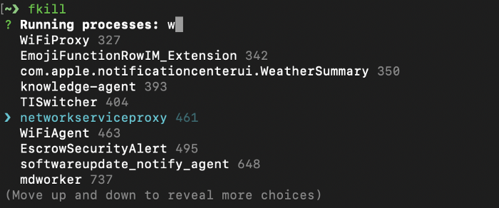
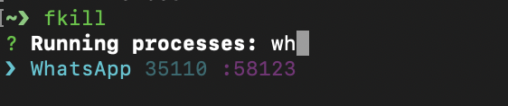

Process kill tool: fkill
Table of Contents

Processes are pretty much everything which works under the hood of the operating system.
Sometimes you may get pretty furious about some processes which are stuck , which prevents you, by holding on to ports and doesn’t allow you to start new processes, that is why you wanna kill, not because you are insane.
This term may seem brutal but, every killing opens opportunity for new born pretty processes. Look at that way.
Killing process is easy, what is hard is to find which one you intend to kill.
Once, i have written a long terminal command and was using it with back searching. Such command was to kill 8080 process:
lsof -i4TCP:8080
Get related line
lsof -i4TCP:8080 | tail -1
Find related column
lsof -i4TCP:8080 | tail -1 | awk ‘{print $2}’ | xargs sudo kill
It is time for fkill
npm install --global fkill-cli
It is also available at brew
brew install fkill
How to use fkill?
List processes
fkill

Kill specific process that is bound to a known port
Kills the process which is bound to 8080 port.
fkill :8080
Kill a process through list, fkill helps auto completion.
